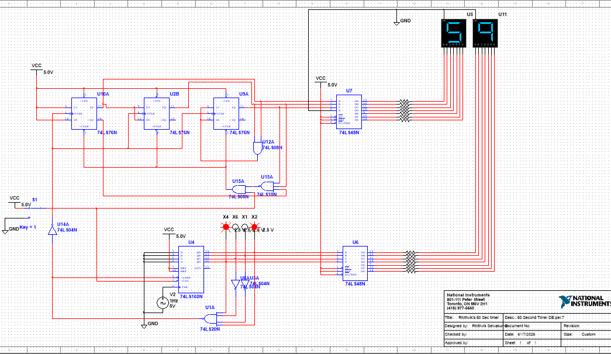

Digital electronics · Multisim
60-Second Synchronous Timer

Project overview
I designed a digital display circuit that counts from 00 to 59 and resets automatically. The project used a synchronous counter design and multiplexed seven-segment displays.
The units stage used an MSI counter; the tens stage used three flip-flops and custom reset logic. I documented the circuit in Multisim.
Original project documentation ↗← Back to all projects